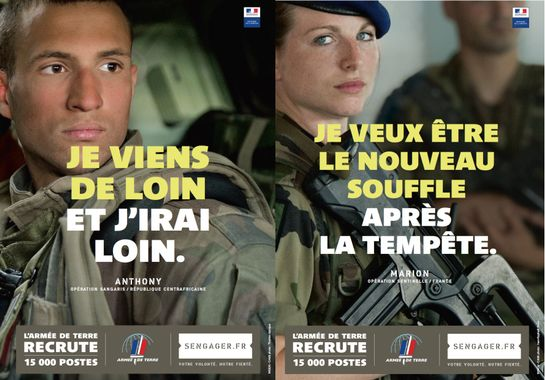
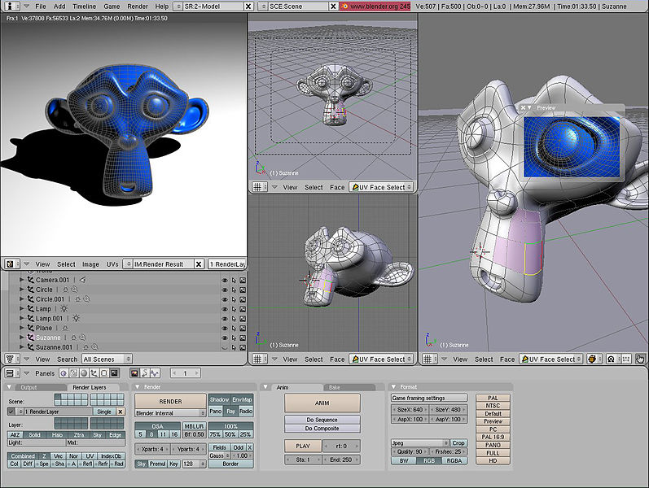
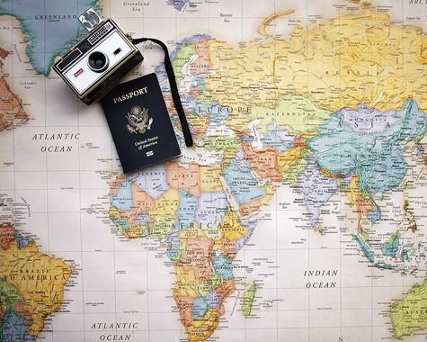
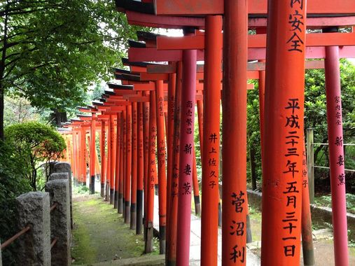

|  |
Bon, pour ce qui est de ce que je veux faire plus tard ce n'est pas un secret,
je voudrais être infographiste en particulier dans la conception des personnages et dans leur modélisation 2D et 3D. |
 |
| source: orientation-pour-tous.fr | source: wikipedia.org |
Même s'il n'est pas très original, mon rêve est de faire un tour du monde mais ça ne serait pas en tant que touriste... enfin pas que.
Ce que j'aimerais vraiment c'est d'aller vivre chez l'habitant, pour apprendre son métier (donc pour ça il faudrait que ce soit un métier plutôt manuel)
et sa manière de vivre en échange du gite. Cela risque de prendre beaucoup de temps et demander beaucoup d'organisation,
et je ne sais même pas si cela est possible. Ce projet ne va donc peut-être jamais voir le jour même si je l'espère.
Quelque chose de propablement plus faisable serait d'aller étudier ou alors travailler à l'étranger après mes études.
L'une des destinations qui me fait le plus envie est le Japon même si je sais que la société niponne est totalement différente de la nôtre et
je pense que c'est pour ça que je ne voudrais pas y rester toute ma vie.
|  |  |
| source: pixabay.com | source: pixabay.com |